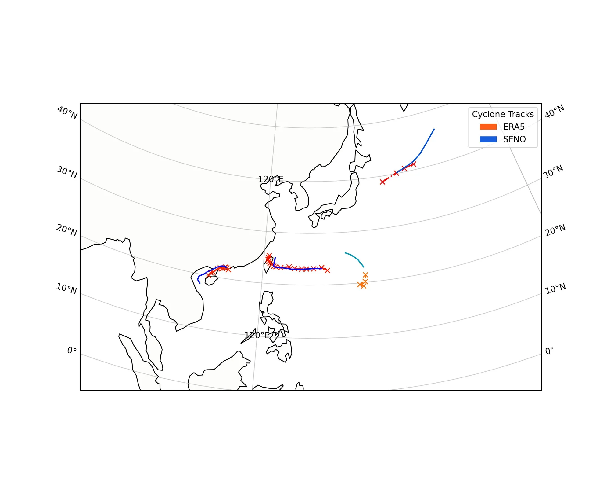

Tropical Cyclone Tracking¶
Tropical cyclone tracking with tracker diagnostic models.
This example will demonstrate how to use the tropical cyclone (TC) tracker diagnostic models for creating TC paths. The diagnostics used here can be combined with other AI weather models and ensemble methods to create complex inference workflow that enable downstream analysis.
In this example you will learn:
- How to instantiate a TC tracker diagnostic
- How to apply the TC tracker to data
- How to couple the TC tracker to a prognostic model
- Post-processing results
Set Up¶
This example will look at tracking cyclones during August 2009, a moment in time when
multiple tropical cyclones where impacting East Asia.
Earth2Studio provides multiple variations of TC trackers such as earth2studio.models.dx.TCTrackerVitart
and earth2studio.models.dx.TCTrackerWuDuan.
The difference being the underlying algorithm used to identify the center.
This example needs the following:
- Diagostic Model: Use the TC tracker
earth2studio.models.dx.TCTrackerWuDuan. - Datasource: Pull data from the WB2 ERA5 data api
earth2studio.data.WB2ERA5. - Prognostic Model: Use the built in FourCastNet Model
earth2studio.models.px.FCN.
import os
os.makedirs("outputs", exist_ok=True)
from dotenv import load_dotenv
load_dotenv() # TODO: make common example prep function
from datetime import datetime, timedelta
import torch
from earth2studio.data import ARCO_ERA5
from earth2studio.models.dx import TCTrackerWuDuan
from earth2studio.models.px import SFNO
from earth2studio.utils.time import to_time_array
# Create tropical cyclone tracker
tracker = TCTrackerWuDuan()
# Load the default model package which downloads the check point from NGC
package = SFNO.load_default_package()
prognostic = SFNO.load_model(package)
# Create the data source
data = ARCO_ERA5()
nsteps = 16 # Number of steps to run the tracker for into future
start_time = datetime(2009, 8, 5) # Start date for inference
Console output534 lines
/__w/earth2studio/earth2studio/.venv/lib/python3.13/site-packages/torch/cuda/__init__.py:64: FutureWarning: The pynvml package is deprecated. Please install nvidia-ml-py instead. If you did not install pynvml directly, please report this to the maintainers of the package that installed pynvml for you.
import pynvml # type: ignore[import]
CuPy distance computation test failed with error: cuVS >= 24.12 or pylibraft < 24.12 should be installed to use this feature
Downloading config.json: 0%| | 0.00/17.5k [00:00<?, ?B/s]
Downloading config.json: 100%|██████████| 17.5k/17.5k [00:00<00:00, 1.01MB/s]
Downloading global_means.npy: 0%| | 0.00/728 [00:00<?, ?B/s]
Downloading global_means.npy: 100%|██████████| 728/728 [00:00<00:00, 408kB/s]
Downloading global_stds.npy: 0%| | 0.00/728 [00:00<?, ?B/s]
Downloading global_stds.npy: 100%|██████████| 728/728 [00:00<00:00, 420kB/s]
Downloading orography.nc: 0%| | 0.00/2.50M [00:00<?, ?B/s]
Downloading orography.nc: 100%|██████████| 2.50M/2.50M [00:00<00:00, 37.5MB/s]
Downloading land_mask.nc: 0%| | 0.00/748k [00:00<?, ?B/s]
Downloading land_mask.nc: 100%|██████████| 748k/748k [00:00<00:00, 8.11MB/s]
Downloading best_ckpt_mp0.tar: 0%| | 0.00/6.40G [00:00<?, ?B/s]
Downloading best_ckpt_mp0.tar: 0%| | 1.19M/6.40G [00:00<09:14, 12.4MB/s]
Downloading best_ckpt_mp0.tar: 0%| | 9.10M/6.40G [00:00<02:07, 53.7MB/s]
Downloading best_ckpt_mp0.tar: 0%| | 24.8M/6.40G [00:00<01:08, 99.4MB/s]
Downloading best_ckpt_mp0.tar: 1%| | 40.5M/6.40G [00:00<00:54, 124MB/s]
Downloading best_ckpt_mp0.tar: 1%| | 52.4M/6.40G [00:00<01:11, 95.3MB/s]
Downloading best_ckpt_mp0.tar: 1%| | 62.3M/6.40G [00:00<01:14, 91.2MB/s]
Downloading best_ckpt_mp0.tar: 1%| | 74.4M/6.40G [00:00<01:13, 91.9MB/s]
Downloading best_ckpt_mp0.tar: 1%|▏ | 83.6M/6.40G [00:01<01:27, 77.6MB/s]
Downloading best_ckpt_mp0.tar: 2%|▏ | 99.4M/6.40G [00:01<01:15, 90.0MB/s]
Downloading best_ckpt_mp0.tar: 2%|▏ | 108M/6.40G [00:01<01:17, 87.2MB/s]
Downloading best_ckpt_mp0.tar: 2%|▏ | 124M/6.40G [00:01<01:03, 106MB/s]
Downloading best_ckpt_mp0.tar: 2%|▏ | 135M/6.40G [00:01<01:18, 85.8MB/s]
Downloading best_ckpt_mp0.tar: 2%|▏ | 149M/6.40G [00:01<01:27, 76.6MB/s]
Downloading best_ckpt_mp0.tar: 3%|▎ | 165M/6.40G [00:01<01:12, 92.9MB/s]
Downloading best_ckpt_mp0.tar: 3%|▎ | 175M/6.40G [00:02<01:19, 84.4MB/s]
Downloading best_ckpt_mp0.tar: 3%|▎ | 191M/6.40G [00:02<01:05, 102MB/s]
Downloading best_ckpt_mp0.tar: 3%|▎ | 202M/6.40G [00:02<01:17, 86.3MB/s]
Downloading best_ckpt_mp0.tar: 3%|▎ | 217M/6.40G [00:02<01:04, 103MB/s]
Downloading best_ckpt_mp0.tar: 3%|▎ | 229M/6.40G [00:02<01:28, 74.9MB/s]
Downloading best_ckpt_mp0.tar: 4%|▎ | 245M/6.40G [00:02<01:11, 93.0MB/s]
Downloading best_ckpt_mp0.tar: 4%|▍ | 256M/6.40G [00:03<01:25, 77.3MB/s]
Downloading best_ckpt_mp0.tar: 4%|▍ | 274M/6.40G [00:03<01:22, 79.3MB/s]
Downloading best_ckpt_mp0.tar: 4%|▍ | 283M/6.40G [00:03<01:31, 71.6MB/s]
Downloading best_ckpt_mp0.tar: 5%|▍ | 298M/6.40G [00:03<01:14, 88.4MB/s]
Downloading best_ckpt_mp0.tar: 5%|▍ | 308M/6.40G [00:03<01:18, 83.9MB/s]
Downloading best_ckpt_mp0.tar: 5%|▍ | 323M/6.40G [00:04<01:27, 74.5MB/s]
Downloading best_ckpt_mp0.tar: 5%|▌ | 334M/6.40G [00:04<01:19, 82.3MB/s]
Downloading best_ckpt_mp0.tar: 5%|▌ | 348M/6.40G [00:04<01:24, 76.9MB/s]
Downloading best_ckpt_mp0.tar: 6%|▌ | 361M/6.40G [00:04<01:13, 87.8MB/s]
Downloading best_ckpt_mp0.tar: 6%|▌ | 373M/6.40G [00:04<01:17, 83.6MB/s]
Downloading best_ckpt_mp0.tar: 6%|▌ | 385M/6.40G [00:04<01:11, 90.6MB/s]
Downloading best_ckpt_mp0.tar: 6%|▌ | 398M/6.40G [00:04<01:11, 89.9MB/s]
Downloading best_ckpt_mp0.tar: 6%|▌ | 408M/6.40G [00:04<01:09, 93.1MB/s]
Downloading best_ckpt_mp0.tar: 6%|▋ | 417M/6.40G [00:05<01:09, 93.1MB/s]
Downloading best_ckpt_mp0.tar: 7%|▋ | 427M/6.40G [00:05<01:29, 71.6MB/s]
Downloading best_ckpt_mp0.tar: 7%|▋ | 443M/6.40G [00:05<01:09, 92.2MB/s]
Downloading best_ckpt_mp0.tar: 7%|▋ | 453M/6.40G [00:05<01:25, 75.2MB/s]
Downloading best_ckpt_mp0.tar: 7%|▋ | 462M/6.40G [00:05<01:19, 80.5MB/s]
Downloading best_ckpt_mp0.tar: 7%|▋ | 472M/6.40G [00:05<01:21, 77.9MB/s]
Downloading best_ckpt_mp0.tar: 7%|▋ | 481M/6.40G [00:06<01:41, 62.6MB/s]
Downloading best_ckpt_mp0.tar: 8%|▊ | 499M/6.40G [00:06<01:12, 88.1MB/s]
Downloading best_ckpt_mp0.tar: 8%|▊ | 509M/6.40G [00:06<01:19, 80.1MB/s]
Downloading best_ckpt_mp0.tar: 8%|▊ | 525M/6.40G [00:06<01:04, 98.5MB/s]
Downloading best_ckpt_mp0.tar: 8%|▊ | 536M/6.40G [00:06<01:11, 87.7MB/s]
Downloading best_ckpt_mp0.tar: 8%|▊ | 554M/6.40G [00:06<00:57, 109MB/s]
Downloading best_ckpt_mp0.tar: 9%|▊ | 566M/6.40G [00:06<01:12, 86.8MB/s]
Downloading best_ckpt_mp0.tar: 9%|▉ | 581M/6.40G [00:07<01:00, 103MB/s]
Downloading best_ckpt_mp0.tar: 9%|▉ | 593M/6.40G [00:07<01:10, 88.0MB/s]
Downloading best_ckpt_mp0.tar: 9%|▉ | 609M/6.40G [00:07<00:59, 105MB/s]
Downloading best_ckpt_mp0.tar: 9%|▉ | 621M/6.40G [00:07<01:26, 72.1MB/s]
Downloading best_ckpt_mp0.tar: 10%|▉ | 630M/6.40G [00:07<01:22, 75.4MB/s]
Downloading best_ckpt_mp0.tar: 10%|▉ | 639M/6.40G [00:07<01:29, 69.7MB/s]
Downloading best_ckpt_mp0.tar: 10%|▉ | 655M/6.40G [00:08<01:09, 89.1MB/s]
Downloading best_ckpt_mp0.tar: 10%|█ | 666M/6.40G [00:08<01:20, 76.7MB/s]
Downloading best_ckpt_mp0.tar: 10%|█ | 678M/6.40G [00:08<01:09, 88.0MB/s]
Downloading best_ckpt_mp0.tar: 11%|█ | 691M/6.40G [00:08<01:12, 84.8MB/s]
Downloading best_ckpt_mp0.tar: 11%|█ | 701M/6.40G [00:08<01:09, 88.0MB/s]
Downloading best_ckpt_mp0.tar: 11%|█ | 713M/6.40G [00:08<01:03, 95.8MB/s]
Downloading best_ckpt_mp0.tar: 11%|█ | 723M/6.40G [00:08<01:13, 82.9MB/s]
Downloading best_ckpt_mp0.tar: 11%|█▏ | 737M/6.40G [00:08<01:01, 99.8MB/s]
Downloading best_ckpt_mp0.tar: 11%|█▏ | 748M/6.40G [00:09<01:10, 86.1MB/s]
Downloading best_ckpt_mp0.tar: 12%|█▏ | 764M/6.40G [00:09<00:57, 105MB/s]
Downloading best_ckpt_mp0.tar: 12%|█▏ | 775M/6.40G [00:09<01:11, 84.6MB/s]
Downloading best_ckpt_mp0.tar: 12%|█▏ | 788M/6.40G [00:09<01:03, 95.4MB/s]
Downloading best_ckpt_mp0.tar: 12%|█▏ | 799M/6.40G [00:09<01:10, 86.2MB/s]
Downloading best_ckpt_mp0.tar: 12%|█▏ | 812M/6.40G [00:09<01:02, 96.8MB/s]
Downloading best_ckpt_mp0.tar: 13%|█▎ | 822M/6.40G [00:10<01:14, 80.9MB/s]
Downloading best_ckpt_mp0.tar: 13%|█▎ | 831M/6.40G [00:10<01:23, 71.8MB/s]
Downloading best_ckpt_mp0.tar: 13%|█▎ | 838M/6.40G [00:10<01:22, 72.7MB/s]
Downloading best_ckpt_mp0.tar: 13%|█▎ | 846M/6.40G [00:10<01:58, 50.3MB/s]
Downloading best_ckpt_mp0.tar: 13%|█▎ | 865M/6.40G [00:10<01:16, 77.5MB/s]
Downloading best_ckpt_mp0.tar: 14%|█▎ | 886M/6.40G [00:10<00:55, 107MB/s]
Downloading best_ckpt_mp0.tar: 14%|█▍ | 906M/6.40G [00:10<00:49, 119MB/s]
Downloading best_ckpt_mp0.tar: 14%|█▍ | 920M/6.40G [00:11<01:10, 83.6MB/s]
Downloading best_ckpt_mp0.tar: 14%|█▍ | 939M/6.40G [00:11<00:56, 105MB/s]
Downloading best_ckpt_mp0.tar: 15%|█▍ | 953M/6.40G [00:11<01:00, 97.8MB/s]
Downloading best_ckpt_mp0.tar: 15%|█▍ | 964M/6.40G [00:11<01:02, 93.5MB/s]
Downloading best_ckpt_mp0.tar: 15%|█▍ | 979M/6.40G [00:11<01:07, 86.0MB/s]
Downloading best_ckpt_mp0.tar: 15%|█▌ | 993M/6.40G [00:12<00:58, 99.8MB/s]
Downloading best_ckpt_mp0.tar: 15%|█▌ | 0.98G/6.40G [00:12<01:07, 86.4MB/s]
Downloading best_ckpt_mp0.tar: 16%|█▌ | 1.00G/6.40G [00:12<00:55, 104MB/s]
Downloading best_ckpt_mp0.tar: 16%|█▌ | 1.01G/6.40G [00:12<01:07, 85.8MB/s]
Downloading best_ckpt_mp0.tar: 16%|█▌ | 1.02G/6.40G [00:12<00:56, 102MB/s]
Downloading best_ckpt_mp0.tar: 16%|█▌ | 1.03G/6.40G [00:12<00:57, 99.7MB/s]
Downloading best_ckpt_mp0.tar: 16%|█▋ | 1.05G/6.40G [00:12<00:50, 114MB/s]
Downloading best_ckpt_mp0.tar: 17%|█▋ | 1.06G/6.40G [00:13<01:22, 69.8MB/s]
Downloading best_ckpt_mp0.tar: 17%|█▋ | 1.08G/6.40G [00:13<01:43, 55.0MB/s]
Downloading best_ckpt_mp0.tar: 17%|█▋ | 1.09G/6.40G [00:13<01:24, 67.7MB/s]
Downloading best_ckpt_mp0.tar: 17%|█▋ | 1.10G/6.40G [00:13<01:26, 65.5MB/s]
Downloading best_ckpt_mp0.tar: 17%|█▋ | 1.12G/6.40G [00:14<01:08, 83.3MB/s]
Downloading best_ckpt_mp0.tar: 18%|█▊ | 1.13G/6.40G [00:14<01:09, 82.0MB/s]
Downloading best_ckpt_mp0.tar: 18%|█▊ | 1.14G/6.40G [00:14<00:57, 98.0MB/s]
Downloading best_ckpt_mp0.tar: 18%|█▊ | 1.15G/6.40G [00:14<01:20, 70.2MB/s]
Downloading best_ckpt_mp0.tar: 18%|█▊ | 1.17G/6.40G [00:14<00:59, 93.7MB/s]
Downloading best_ckpt_mp0.tar: 19%|█▊ | 1.18G/6.40G [00:14<01:08, 81.9MB/s]
Downloading best_ckpt_mp0.tar: 19%|█▊ | 1.20G/6.40G [00:15<01:02, 89.6MB/s]
Downloading best_ckpt_mp0.tar: 19%|█▉ | 1.21G/6.40G [00:15<00:52, 106MB/s]
Downloading best_ckpt_mp0.tar: 19%|█▉ | 1.23G/6.40G [00:15<00:54, 102MB/s]
Downloading best_ckpt_mp0.tar: 19%|█▉ | 1.24G/6.40G [00:15<00:47, 117MB/s]
Downloading best_ckpt_mp0.tar: 20%|█▉ | 1.25G/6.40G [00:15<00:52, 105MB/s]
Downloading best_ckpt_mp0.tar: 20%|█▉ | 1.27G/6.40G [00:15<00:46, 119MB/s]
Downloading best_ckpt_mp0.tar: 20%|██ | 1.28G/6.40G [00:15<00:52, 105MB/s]
Downloading best_ckpt_mp0.tar: 20%|██ | 1.30G/6.40G [00:16<01:03, 86.1MB/s]
Downloading best_ckpt_mp0.tar: 20%|██ | 1.31G/6.40G [00:16<00:55, 97.7MB/s]
Downloading best_ckpt_mp0.tar: 21%|██ | 1.32G/6.40G [00:16<01:01, 88.5MB/s]
Downloading best_ckpt_mp0.tar: 21%|██ | 1.34G/6.40G [00:16<00:51, 106MB/s]
Downloading best_ckpt_mp0.tar: 21%|██ | 1.35G/6.40G [00:16<00:53, 101MB/s]
Downloading best_ckpt_mp0.tar: 21%|██▏ | 1.36G/6.40G [00:16<00:45, 118MB/s]
Downloading best_ckpt_mp0.tar: 21%|██▏ | 1.37G/6.40G [00:16<00:56, 95.0MB/s]
Downloading best_ckpt_mp0.tar: 22%|██▏ | 1.39G/6.40G [00:16<00:48, 111MB/s]
Downloading best_ckpt_mp0.tar: 22%|██▏ | 1.40G/6.40G [00:17<01:08, 78.1MB/s]
Downloading best_ckpt_mp0.tar: 22%|██▏ | 1.42G/6.40G [00:17<00:55, 96.1MB/s]
Downloading best_ckpt_mp0.tar: 22%|██▏ | 1.43G/6.40G [00:17<01:02, 85.3MB/s]
Downloading best_ckpt_mp0.tar: 23%|██▎ | 1.44G/6.40G [00:17<00:54, 98.1MB/s]
Downloading best_ckpt_mp0.tar: 23%|██▎ | 1.45G/6.40G [00:17<01:06, 80.0MB/s]
Downloading best_ckpt_mp0.tar: 23%|██▎ | 1.47G/6.40G [00:17<00:55, 96.0MB/s]
Downloading best_ckpt_mp0.tar: 23%|██▎ | 1.48G/6.40G [00:18<00:55, 94.8MB/s]
Downloading best_ckpt_mp0.tar: 23%|██▎ | 1.50G/6.40G [00:18<00:47, 111MB/s]
Downloading best_ckpt_mp0.tar: 24%|██▎ | 1.51G/6.40G [00:18<01:02, 83.9MB/s]
Downloading best_ckpt_mp0.tar: 24%|██▍ | 1.52G/6.40G [00:18<00:52, 100MB/s]
Downloading best_ckpt_mp0.tar: 24%|██▍ | 1.53G/6.40G [00:18<00:59, 87.7MB/s]
Downloading best_ckpt_mp0.tar: 24%|██▍ | 1.55G/6.40G [00:18<00:54, 95.6MB/s]
Downloading best_ckpt_mp0.tar: 24%|██▍ | 1.56G/6.40G [00:19<01:06, 78.7MB/s]
Downloading best_ckpt_mp0.tar: 25%|██▍ | 1.57G/6.40G [00:19<00:55, 93.5MB/s]
Downloading best_ckpt_mp0.tar: 25%|██▍ | 1.58G/6.40G [00:19<01:09, 74.4MB/s]
Downloading best_ckpt_mp0.tar: 25%|██▍ | 1.59G/6.40G [00:19<00:59, 87.3MB/s]
Downloading best_ckpt_mp0.tar: 25%|██▌ | 1.61G/6.40G [00:19<00:58, 87.4MB/s]
Downloading best_ckpt_mp0.tar: 25%|██▌ | 1.62G/6.40G [00:19<00:49, 104MB/s]
Downloading best_ckpt_mp0.tar: 26%|██▌ | 1.63G/6.40G [00:19<00:55, 92.6MB/s]
Downloading best_ckpt_mp0.tar: 26%|██▌ | 1.65G/6.40G [00:20<00:46, 109MB/s]
Downloading best_ckpt_mp0.tar: 26%|██▌ | 1.66G/6.40G [00:20<00:53, 94.4MB/s]
Downloading best_ckpt_mp0.tar: 26%|██▌ | 1.67G/6.40G [00:20<00:48, 104MB/s]
Downloading best_ckpt_mp0.tar: 26%|██▋ | 1.69G/6.40G [00:20<00:52, 96.7MB/s]
Downloading best_ckpt_mp0.tar: 27%|██▋ | 1.70G/6.40G [00:20<00:46, 108MB/s]
Downloading best_ckpt_mp0.tar: 27%|██▋ | 1.71G/6.40G [00:20<00:52, 95.7MB/s]
Downloading best_ckpt_mp0.tar: 27%|██▋ | 1.72G/6.40G [00:20<00:49, 102MB/s]
Downloading best_ckpt_mp0.tar: 27%|██▋ | 1.74G/6.40G [00:20<00:45, 110MB/s]
Downloading best_ckpt_mp0.tar: 27%|██▋ | 1.75G/6.40G [00:21<00:46, 107MB/s]
Downloading best_ckpt_mp0.tar: 28%|██▊ | 1.76G/6.40G [00:21<00:40, 123MB/s]
Downloading best_ckpt_mp0.tar: 28%|██▊ | 1.77G/6.40G [00:21<00:52, 94.7MB/s]
Downloading best_ckpt_mp0.tar: 28%|██▊ | 1.79G/6.40G [00:21<00:55, 89.9MB/s]
Downloading best_ckpt_mp0.tar: 28%|██▊ | 1.80G/6.40G [00:21<00:47, 103MB/s]
Downloading best_ckpt_mp0.tar: 28%|██▊ | 1.82G/6.40G [00:21<00:49, 98.7MB/s]
Downloading best_ckpt_mp0.tar: 29%|██▊ | 1.83G/6.40G [00:21<00:43, 114MB/s]
Downloading best_ckpt_mp0.tar: 29%|██▉ | 1.84G/6.40G [00:22<00:54, 90.3MB/s]
Downloading best_ckpt_mp0.tar: 29%|██▉ | 1.86G/6.40G [00:22<00:46, 105MB/s]
Downloading best_ckpt_mp0.tar: 29%|██▉ | 1.87G/6.40G [00:22<00:57, 84.1MB/s]
Downloading best_ckpt_mp0.tar: 29%|██▉ | 1.88G/6.40G [00:22<00:48, 99.2MB/s]
Downloading best_ckpt_mp0.tar: 30%|██▉ | 1.90G/6.40G [00:22<00:55, 87.2MB/s]
Downloading best_ckpt_mp0.tar: 30%|██▉ | 1.90G/6.40G [00:22<00:57, 83.4MB/s]
Downloading best_ckpt_mp0.tar: 30%|██▉ | 1.92G/6.40G [00:23<01:14, 64.2MB/s]
Downloading best_ckpt_mp0.tar: 30%|███ | 1.93G/6.40G [00:23<01:01, 77.4MB/s]
Downloading best_ckpt_mp0.tar: 30%|███ | 1.94G/6.40G [00:23<01:01, 77.2MB/s]
Downloading best_ckpt_mp0.tar: 31%|███ | 1.96G/6.40G [00:23<00:50, 94.5MB/s]
Downloading best_ckpt_mp0.tar: 31%|███ | 1.97G/6.40G [00:23<01:01, 77.2MB/s]
Downloading best_ckpt_mp0.tar: 31%|███ | 1.98G/6.40G [00:23<00:50, 93.0MB/s]
Downloading best_ckpt_mp0.tar: 31%|███ | 1.99G/6.40G [00:24<00:58, 80.8MB/s]
Downloading best_ckpt_mp0.tar: 31%|███▏ | 2.01G/6.40G [00:24<00:47, 99.2MB/s]
Downloading best_ckpt_mp0.tar: 32%|███▏ | 2.02G/6.40G [00:24<00:52, 88.8MB/s]
Downloading best_ckpt_mp0.tar: 32%|███▏ | 2.03G/6.40G [00:24<00:46, 101MB/s]
Downloading best_ckpt_mp0.tar: 32%|███▏ | 2.05G/6.40G [00:24<00:52, 88.5MB/s]
Downloading best_ckpt_mp0.tar: 32%|███▏ | 2.06G/6.40G [00:24<00:43, 106MB/s]
Downloading best_ckpt_mp0.tar: 32%|███▏ | 2.07G/6.40G [00:24<00:50, 92.1MB/s]
Downloading best_ckpt_mp0.tar: 33%|███▎ | 2.09G/6.40G [00:25<00:43, 106MB/s]
Downloading best_ckpt_mp0.tar: 33%|███▎ | 2.10G/6.40G [00:25<00:50, 91.1MB/s]
Downloading best_ckpt_mp0.tar: 33%|███▎ | 2.11G/6.40G [00:25<00:43, 105MB/s]
Downloading best_ckpt_mp0.tar: 33%|███▎ | 2.13G/6.40G [00:25<00:58, 77.9MB/s]
Downloading best_ckpt_mp0.tar: 33%|███▎ | 2.14G/6.40G [00:25<00:48, 94.1MB/s]
Downloading best_ckpt_mp0.tar: 34%|███▎ | 2.15G/6.40G [00:25<00:52, 86.9MB/s]
Downloading best_ckpt_mp0.tar: 34%|███▍ | 2.16G/6.40G [00:26<01:08, 66.0MB/s]
Downloading best_ckpt_mp0.tar: 34%|███▍ | 2.18G/6.40G [00:26<00:52, 86.2MB/s]
Downloading best_ckpt_mp0.tar: 34%|███▍ | 2.19G/6.40G [00:26<00:58, 77.6MB/s]
Downloading best_ckpt_mp0.tar: 35%|███▍ | 2.21G/6.40G [00:26<00:37, 119MB/s]
Downloading best_ckpt_mp0.tar: 35%|███▍ | 2.23G/6.40G [00:26<00:44, 100MB/s]
Downloading best_ckpt_mp0.tar: 35%|███▌ | 2.24G/6.40G [00:26<00:40, 109MB/s]
Downloading best_ckpt_mp0.tar: 35%|███▌ | 2.26G/6.40G [00:27<00:48, 91.6MB/s]
Downloading best_ckpt_mp0.tar: 35%|███▌ | 2.27G/6.40G [00:27<00:42, 104MB/s]
Downloading best_ckpt_mp0.tar: 36%|███▌ | 2.28G/6.40G [00:27<00:51, 86.3MB/s]
Downloading best_ckpt_mp0.tar: 36%|███▌ | 2.30G/6.40G [00:27<00:43, 102MB/s]
Downloading best_ckpt_mp0.tar: 36%|███▌ | 2.31G/6.40G [00:27<00:46, 93.9MB/s]
Downloading best_ckpt_mp0.tar: 36%|███▋ | 2.32G/6.40G [00:27<00:42, 103MB/s]
Downloading best_ckpt_mp0.tar: 36%|███▋ | 2.33G/6.40G [00:27<00:48, 90.8MB/s]
Downloading best_ckpt_mp0.tar: 37%|███▋ | 2.35G/6.40G [00:28<00:39, 109MB/s]
Downloading best_ckpt_mp0.tar: 37%|███▋ | 2.36G/6.40G [00:28<00:49, 88.0MB/s]
Downloading best_ckpt_mp0.tar: 37%|███▋ | 2.38G/6.40G [00:28<00:40, 107MB/s]
Downloading best_ckpt_mp0.tar: 37%|███▋ | 2.39G/6.40G [00:28<00:48, 89.7MB/s]
Downloading best_ckpt_mp0.tar: 38%|███▊ | 2.40G/6.40G [00:28<00:42, 101MB/s]
Downloading best_ckpt_mp0.tar: 38%|███▊ | 2.41G/6.40G [00:28<00:52, 81.3MB/s]
Downloading best_ckpt_mp0.tar: 38%|███▊ | 2.43G/6.40G [00:28<00:43, 98.2MB/s]
Downloading best_ckpt_mp0.tar: 38%|███▊ | 2.44G/6.40G [00:29<00:51, 82.8MB/s]
Downloading best_ckpt_mp0.tar: 38%|███▊ | 2.45G/6.40G [00:29<00:48, 87.6MB/s]
Downloading best_ckpt_mp0.tar: 38%|███▊ | 2.46G/6.40G [00:29<00:54, 77.5MB/s]
Downloading best_ckpt_mp0.tar: 39%|███▊ | 2.48G/6.40G [00:29<00:42, 98.4MB/s]
Downloading best_ckpt_mp0.tar: 39%|███▉ | 2.49G/6.40G [00:29<00:52, 80.1MB/s]
Downloading best_ckpt_mp0.tar: 39%|███▉ | 2.50G/6.40G [00:29<00:49, 84.8MB/s]
Downloading best_ckpt_mp0.tar: 39%|███▉ | 2.51G/6.40G [00:29<00:42, 98.9MB/s]
Downloading best_ckpt_mp0.tar: 39%|███▉ | 2.52G/6.40G [00:30<00:49, 84.7MB/s]
Downloading best_ckpt_mp0.tar: 40%|███▉ | 2.53G/6.40G [00:30<00:42, 98.6MB/s]
Downloading best_ckpt_mp0.tar: 40%|███▉ | 2.54G/6.40G [00:30<00:47, 86.6MB/s]
Downloading best_ckpt_mp0.tar: 40%|███▉ | 2.56G/6.40G [00:30<00:40, 102MB/s]
Downloading best_ckpt_mp0.tar: 40%|████ | 2.57G/6.40G [00:30<00:46, 89.3MB/s]
Downloading best_ckpt_mp0.tar: 40%|████ | 2.58G/6.40G [00:30<00:38, 105MB/s]
Downloading best_ckpt_mp0.tar: 41%|████ | 2.60G/6.40G [00:31<00:49, 81.9MB/s]
Downloading best_ckpt_mp0.tar: 41%|████ | 2.61G/6.40G [00:31<00:43, 93.8MB/s]
Downloading best_ckpt_mp0.tar: 41%|████ | 2.62G/6.40G [00:31<00:55, 73.5MB/s]
Downloading best_ckpt_mp0.tar: 41%|████ | 2.63G/6.40G [00:31<00:51, 77.9MB/s]
Downloading best_ckpt_mp0.tar: 41%|████▏ | 2.64G/6.40G [00:31<01:01, 65.7MB/s]
Downloading best_ckpt_mp0.tar: 41%|████▏ | 2.65G/6.40G [00:31<00:55, 72.2MB/s]
Downloading best_ckpt_mp0.tar: 42%|████▏ | 2.67G/6.40G [00:32<00:45, 88.6MB/s]
Downloading best_ckpt_mp0.tar: 42%|████▏ | 2.68G/6.40G [00:32<00:51, 78.2MB/s]
Downloading best_ckpt_mp0.tar: 42%|████▏ | 2.69G/6.40G [00:32<00:47, 84.5MB/s]
Downloading best_ckpt_mp0.tar: 42%|████▏ | 2.70G/6.40G [00:32<00:54, 73.5MB/s]
Downloading best_ckpt_mp0.tar: 42%|████▏ | 2.71G/6.40G [00:32<00:47, 83.0MB/s]
Downloading best_ckpt_mp0.tar: 42%|████▏ | 2.72G/6.40G [00:32<00:46, 85.6MB/s]
Downloading best_ckpt_mp0.tar: 43%|████▎ | 2.72G/6.40G [00:32<01:05, 60.1MB/s]
Downloading best_ckpt_mp0.tar: 43%|████▎ | 2.74G/6.40G [00:33<00:48, 81.3MB/s]
Downloading best_ckpt_mp0.tar: 43%|████▎ | 2.75G/6.40G [00:33<00:50, 77.2MB/s]
Downloading best_ckpt_mp0.tar: 43%|████▎ | 2.76G/6.40G [00:33<00:43, 90.0MB/s]
Downloading best_ckpt_mp0.tar: 43%|████▎ | 2.77G/6.40G [00:33<00:48, 80.6MB/s]
Downloading best_ckpt_mp0.tar: 44%|████▎ | 2.79G/6.40G [00:33<00:40, 96.4MB/s]
Downloading best_ckpt_mp0.tar: 44%|████▎ | 2.80G/6.40G [00:33<00:48, 80.4MB/s]
Downloading best_ckpt_mp0.tar: 44%|████▍ | 2.81G/6.40G [00:33<00:38, 99.6MB/s]
Downloading best_ckpt_mp0.tar: 44%|████▍ | 2.83G/6.40G [00:34<00:44, 87.1MB/s]
Downloading best_ckpt_mp0.tar: 44%|████▍ | 2.84G/6.40G [00:34<00:35, 108MB/s]
Downloading best_ckpt_mp0.tar: 45%|████▍ | 2.85G/6.40G [00:34<00:42, 89.8MB/s]
Downloading best_ckpt_mp0.tar: 45%|████▍ | 2.87G/6.40G [00:34<00:35, 106MB/s]
Downloading best_ckpt_mp0.tar: 45%|████▌ | 2.88G/6.40G [00:34<00:41, 91.5MB/s]
Downloading best_ckpt_mp0.tar: 45%|████▌ | 2.90G/6.40G [00:34<00:35, 107MB/s]
Downloading best_ckpt_mp0.tar: 45%|████▌ | 2.91G/6.40G [00:34<00:40, 92.8MB/s]
Downloading best_ckpt_mp0.tar: 46%|████▌ | 2.92G/6.40G [00:35<00:35, 106MB/s]
Downloading best_ckpt_mp0.tar: 46%|████▌ | 2.93G/6.40G [00:35<00:41, 88.8MB/s]
Downloading best_ckpt_mp0.tar: 46%|████▌ | 2.95G/6.40G [00:35<00:35, 106MB/s]
Downloading best_ckpt_mp0.tar: 46%|████▋ | 2.96G/6.40G [00:35<00:40, 90.3MB/s]
Downloading best_ckpt_mp0.tar: 46%|████▋ | 2.97G/6.40G [00:35<00:35, 104MB/s]
Downloading best_ckpt_mp0.tar: 47%|████▋ | 2.99G/6.40G [00:35<00:40, 89.4MB/s]
Downloading best_ckpt_mp0.tar: 47%|████▋ | 3.00G/6.40G [00:35<00:35, 103MB/s]
Downloading best_ckpt_mp0.tar: 47%|████▋ | 3.01G/6.40G [00:36<00:39, 91.7MB/s]
Downloading best_ckpt_mp0.tar: 47%|████▋ | 3.03G/6.40G [00:36<00:35, 101MB/s]
Downloading best_ckpt_mp0.tar: 47%|████▋ | 3.04G/6.40G [00:36<00:46, 77.6MB/s]
Downloading best_ckpt_mp0.tar: 48%|████▊ | 3.06G/6.40G [00:36<00:36, 97.3MB/s]
Downloading best_ckpt_mp0.tar: 48%|████▊ | 3.07G/6.40G [00:36<00:32, 111MB/s]
Downloading best_ckpt_mp0.tar: 48%|████▊ | 3.08G/6.40G [00:36<00:37, 94.1MB/s]
Downloading best_ckpt_mp0.tar: 48%|████▊ | 3.10G/6.40G [00:37<00:32, 108MB/s]
Downloading best_ckpt_mp0.tar: 49%|████▊ | 3.11G/6.40G [00:37<00:35, 98.4MB/s]
Downloading best_ckpt_mp0.tar: 49%|████▉ | 3.12G/6.40G [00:37<00:34, 101MB/s]
Downloading best_ckpt_mp0.tar: 49%|████▉ | 3.13G/6.40G [00:37<00:39, 89.3MB/s]
Downloading best_ckpt_mp0.tar: 49%|████▉ | 3.15G/6.40G [00:37<00:33, 105MB/s]
Downloading best_ckpt_mp0.tar: 49%|████▉ | 3.16G/6.40G [00:37<00:39, 88.9MB/s]
Downloading best_ckpt_mp0.tar: 50%|████▉ | 3.18G/6.40G [00:37<00:33, 102MB/s]
Downloading best_ckpt_mp0.tar: 50%|████▉ | 3.19G/6.40G [00:38<00:36, 93.6MB/s]
Downloading best_ckpt_mp0.tar: 50%|█████ | 3.20G/6.40G [00:38<00:32, 106MB/s]
Downloading best_ckpt_mp0.tar: 50%|█████ | 3.21G/6.40G [00:38<00:33, 101MB/s]
Downloading best_ckpt_mp0.tar: 50%|█████ | 3.23G/6.40G [00:38<00:29, 116MB/s]
Downloading best_ckpt_mp0.tar: 51%|█████ | 3.24G/6.40G [00:38<00:34, 98.6MB/s]
Downloading best_ckpt_mp0.tar: 51%|█████ | 3.25G/6.40G [00:38<00:30, 111MB/s]
Downloading best_ckpt_mp0.tar: 51%|█████ | 3.27G/6.40G [00:38<00:37, 90.1MB/s]
Downloading best_ckpt_mp0.tar: 51%|█████ | 3.28G/6.40G [00:38<00:33, 99.3MB/s]
Downloading best_ckpt_mp0.tar: 51%|█████▏ | 3.29G/6.40G [00:39<00:51, 64.7MB/s]
Downloading best_ckpt_mp0.tar: 52%|█████▏ | 3.31G/6.40G [00:39<00:40, 81.1MB/s]
Downloading best_ckpt_mp0.tar: 52%|█████▏ | 3.32G/6.40G [00:39<00:36, 89.3MB/s]
Downloading best_ckpt_mp0.tar: 52%|█████▏ | 3.33G/6.40G [00:39<00:38, 84.6MB/s]
Downloading best_ckpt_mp0.tar: 52%|█████▏ | 3.35G/6.40G [00:39<00:33, 98.7MB/s]
Downloading best_ckpt_mp0.tar: 52%|█████▏ | 3.36G/6.40G [00:40<00:35, 91.6MB/s]
Downloading best_ckpt_mp0.tar: 53%|█████▎ | 3.37G/6.40G [00:40<00:31, 104MB/s]
Downloading best_ckpt_mp0.tar: 53%|█████▎ | 3.38G/6.40G [00:40<00:35, 91.2MB/s]
Downloading best_ckpt_mp0.tar: 53%|█████▎ | 3.40G/6.40G [00:40<00:30, 106MB/s]
Downloading best_ckpt_mp0.tar: 53%|█████▎ | 3.41G/6.40G [00:40<00:35, 91.5MB/s]
Downloading best_ckpt_mp0.tar: 53%|█████▎ | 3.42G/6.40G [00:40<00:31, 102MB/s]
Downloading best_ckpt_mp0.tar: 54%|█████▎ | 3.43G/6.40G [00:40<00:38, 83.3MB/s]
Downloading best_ckpt_mp0.tar: 54%|█████▍ | 3.44G/6.40G [00:40<00:36, 87.6MB/s]
Downloading best_ckpt_mp0.tar: 54%|█████▍ | 3.45G/6.40G [00:41<00:36, 85.8MB/s]
Downloading best_ckpt_mp0.tar: 54%|█████▍ | 3.46G/6.40G [00:41<00:36, 86.0MB/s]
Downloading best_ckpt_mp0.tar: 54%|█████▍ | 3.48G/6.40G [00:41<00:29, 105MB/s]
Downloading best_ckpt_mp0.tar: 55%|█████▍ | 3.49G/6.40G [00:41<00:35, 88.0MB/s]
Downloading best_ckpt_mp0.tar: 55%|█████▍ | 3.50G/6.40G [00:41<00:32, 95.2MB/s]
Downloading best_ckpt_mp0.tar: 55%|█████▍ | 3.51G/6.40G [00:41<00:48, 64.0MB/s]
Downloading best_ckpt_mp0.tar: 55%|█████▍ | 3.52G/6.40G [00:42<00:48, 64.1MB/s]
Downloading best_ckpt_mp0.tar: 55%|█████▌ | 3.53G/6.40G [00:42<00:45, 67.5MB/s]
Downloading best_ckpt_mp0.tar: 55%|█████▌ | 3.53G/6.40G [00:42<00:51, 59.4MB/s]
Downloading best_ckpt_mp0.tar: 55%|█████▌ | 3.54G/6.40G [00:42<00:42, 72.1MB/s]
Downloading best_ckpt_mp0.tar: 56%|█████▌ | 3.55G/6.40G [00:42<00:43, 70.5MB/s]
Downloading best_ckpt_mp0.tar: 56%|█████▌ | 3.56G/6.40G [00:42<00:44, 68.4MB/s]
Downloading best_ckpt_mp0.tar: 56%|█████▌ | 3.57G/6.40G [00:42<00:41, 73.0MB/s]
Downloading best_ckpt_mp0.tar: 56%|█████▌ | 3.58G/6.40G [00:42<00:45, 67.3MB/s]
Downloading best_ckpt_mp0.tar: 56%|█████▌ | 3.58G/6.40G [00:43<00:42, 71.7MB/s]
Downloading best_ckpt_mp0.tar: 56%|█████▌ | 3.59G/6.40G [00:43<00:40, 74.8MB/s]
Downloading best_ckpt_mp0.tar: 56%|█████▌ | 3.60G/6.40G [00:43<00:41, 73.2MB/s]
Downloading best_ckpt_mp0.tar: 56%|█████▋ | 3.61G/6.40G [00:43<00:50, 58.8MB/s]
Downloading best_ckpt_mp0.tar: 56%|█████▋ | 3.61G/6.40G [00:43<00:51, 58.6MB/s]
Downloading best_ckpt_mp0.tar: 57%|█████▋ | 3.62G/6.40G [00:43<00:49, 60.8MB/s]
Downloading best_ckpt_mp0.tar: 57%|█████▋ | 3.64G/6.40G [00:43<00:39, 75.0MB/s]
Downloading best_ckpt_mp0.tar: 57%|█████▋ | 3.65G/6.40G [00:44<00:41, 70.3MB/s]
Downloading best_ckpt_mp0.tar: 57%|█████▋ | 3.66G/6.40G [00:44<00:32, 89.8MB/s]
Downloading best_ckpt_mp0.tar: 57%|█████▋ | 3.67G/6.40G [00:44<00:38, 75.7MB/s]
Downloading best_ckpt_mp0.tar: 58%|█████▊ | 3.68G/6.40G [00:44<00:37, 77.7MB/s]
Downloading best_ckpt_mp0.tar: 58%|█████▊ | 3.69G/6.40G [00:44<00:37, 77.1MB/s]
Downloading best_ckpt_mp0.tar: 58%|█████▊ | 3.70G/6.40G [00:44<00:39, 72.9MB/s]
Downloading best_ckpt_mp0.tar: 58%|█████▊ | 3.70G/6.40G [00:44<00:41, 70.2MB/s]
Downloading best_ckpt_mp0.tar: 58%|█████▊ | 3.71G/6.40G [00:45<00:39, 72.6MB/s]
Downloading best_ckpt_mp0.tar: 58%|█████▊ | 3.72G/6.40G [00:45<00:43, 65.5MB/s]
Downloading best_ckpt_mp0.tar: 58%|█████▊ | 3.73G/6.40G [00:45<00:53, 53.1MB/s]
Downloading best_ckpt_mp0.tar: 58%|█████▊ | 3.74G/6.40G [00:45<00:41, 68.6MB/s]
Downloading best_ckpt_mp0.tar: 59%|█████▊ | 3.75G/6.40G [00:45<00:40, 70.2MB/s]
Downloading best_ckpt_mp0.tar: 59%|█████▉ | 3.76G/6.40G [00:45<00:36, 76.9MB/s]
Downloading best_ckpt_mp0.tar: 59%|█████▉ | 3.77G/6.40G [00:45<00:32, 87.7MB/s]
Downloading best_ckpt_mp0.tar: 59%|█████▉ | 3.78G/6.40G [00:46<00:37, 74.4MB/s]
Downloading best_ckpt_mp0.tar: 59%|█████▉ | 3.80G/6.40G [00:46<00:28, 97.5MB/s]
Downloading best_ckpt_mp0.tar: 60%|█████▉ | 3.81G/6.40G [00:46<00:48, 57.4MB/s]
Downloading best_ckpt_mp0.tar: 60%|█████▉ | 3.82G/6.40G [00:46<00:35, 77.8MB/s]
Downloading best_ckpt_mp0.tar: 60%|█████▉ | 3.84G/6.40G [00:47<00:50, 54.7MB/s]
Downloading best_ckpt_mp0.tar: 60%|██████ | 3.85G/6.40G [00:47<00:40, 67.9MB/s]
Downloading best_ckpt_mp0.tar: 60%|██████ | 3.86G/6.40G [00:47<00:40, 67.9MB/s]
Downloading best_ckpt_mp0.tar: 61%|██████ | 3.87G/6.40G [00:47<00:32, 83.7MB/s]
Downloading best_ckpt_mp0.tar: 61%|██████ | 3.88G/6.40G [00:47<00:33, 81.6MB/s]
Downloading best_ckpt_mp0.tar: 61%|██████ | 3.90G/6.40G [00:47<00:27, 96.7MB/s]
Downloading best_ckpt_mp0.tar: 61%|██████ | 3.91G/6.40G [00:47<00:29, 92.0MB/s]
Downloading best_ckpt_mp0.tar: 61%|██████▏ | 3.92G/6.40G [00:47<00:27, 98.0MB/s]
Downloading best_ckpt_mp0.tar: 61%|██████▏ | 3.93G/6.40G [00:48<00:38, 68.3MB/s]
Downloading best_ckpt_mp0.tar: 62%|██████▏ | 3.95G/6.40G [00:48<00:27, 95.8MB/s]
Downloading best_ckpt_mp0.tar: 62%|██████▏ | 3.96G/6.40G [00:48<00:28, 90.8MB/s]
Downloading best_ckpt_mp0.tar: 62%|██████▏ | 3.97G/6.40G [00:48<00:26, 99.1MB/s]
Downloading best_ckpt_mp0.tar: 62%|██████▏ | 3.99G/6.40G [00:48<00:21, 118MB/s]
Downloading best_ckpt_mp0.tar: 63%|██████▎ | 4.00G/6.40G [00:48<00:21, 122MB/s]
Downloading best_ckpt_mp0.tar: 63%|██████▎ | 4.02G/6.40G [00:48<00:27, 93.5MB/s]
Downloading best_ckpt_mp0.tar: 63%|██████▎ | 4.03G/6.40G [00:49<00:23, 109MB/s]
Downloading best_ckpt_mp0.tar: 63%|██████▎ | 4.04G/6.40G [00:49<00:26, 93.8MB/s]
Downloading best_ckpt_mp0.tar: 63%|██████▎ | 4.06G/6.40G [00:49<00:22, 110MB/s]
Downloading best_ckpt_mp0.tar: 64%|██████▎ | 4.07G/6.40G [00:49<00:28, 87.7MB/s]
Downloading best_ckpt_mp0.tar: 64%|██████▍ | 4.08G/6.40G [00:49<00:25, 97.1MB/s]
Downloading best_ckpt_mp0.tar: 64%|██████▍ | 4.09G/6.40G [00:49<00:30, 80.7MB/s]
Downloading best_ckpt_mp0.tar: 64%|██████▍ | 4.10G/6.40G [00:50<00:28, 86.6MB/s]
Downloading best_ckpt_mp0.tar: 64%|██████▍ | 4.11G/6.40G [00:50<00:25, 95.7MB/s]
Downloading best_ckpt_mp0.tar: 64%|██████▍ | 4.13G/6.40G [00:50<00:29, 81.6MB/s]
Downloading best_ckpt_mp0.tar: 65%|██████▍ | 4.14G/6.40G [00:50<00:25, 95.9MB/s]
Downloading best_ckpt_mp0.tar: 65%|██████▍ | 4.15G/6.40G [00:50<00:41, 58.4MB/s]
Downloading best_ckpt_mp0.tar: 65%|██████▌ | 4.16G/6.40G [00:50<00:31, 75.4MB/s]
Downloading best_ckpt_mp0.tar: 65%|██████▌ | 4.17G/6.40G [00:51<00:31, 75.2MB/s]
Downloading best_ckpt_mp0.tar: 65%|██████▌ | 4.19G/6.40G [00:51<00:27, 85.1MB/s]
Downloading best_ckpt_mp0.tar: 66%|██████▌ | 4.20G/6.40G [00:51<00:29, 80.1MB/s]
Downloading best_ckpt_mp0.tar: 66%|██████▌ | 4.21G/6.40G [00:51<00:23, 102MB/s]
Downloading best_ckpt_mp0.tar: 66%|██████▌ | 4.22G/6.40G [00:51<00:27, 84.2MB/s]
Downloading best_ckpt_mp0.tar: 66%|██████▌ | 4.23G/6.40G [00:51<00:26, 86.5MB/s]
Downloading best_ckpt_mp0.tar: 66%|██████▋ | 4.24G/6.40G [00:51<00:29, 78.4MB/s]
Downloading best_ckpt_mp0.tar: 66%|██████▋ | 4.25G/6.40G [00:51<00:28, 80.7MB/s]
Downloading best_ckpt_mp0.tar: 67%|██████▋ | 4.27G/6.40G [00:52<00:26, 85.2MB/s]
Downloading best_ckpt_mp0.tar: 67%|██████▋ | 4.28G/6.40G [00:52<00:23, 96.8MB/s]
Downloading best_ckpt_mp0.tar: 67%|██████▋ | 4.30G/6.40G [00:52<00:22, 99.4MB/s]
Downloading best_ckpt_mp0.tar: 67%|██████▋ | 4.31G/6.40G [00:52<00:22, 98.2MB/s]
Downloading best_ckpt_mp0.tar: 67%|██████▋ | 4.31G/6.40G [00:52<00:31, 70.8MB/s]
Downloading best_ckpt_mp0.tar: 68%|██████▊ | 4.33G/6.40G [00:52<00:24, 90.1MB/s]
Downloading best_ckpt_mp0.tar: 68%|██████▊ | 4.35G/6.40G [00:52<00:20, 107MB/s]
Downloading best_ckpt_mp0.tar: 68%|██████▊ | 4.36G/6.40G [00:53<00:27, 78.9MB/s]
Downloading best_ckpt_mp0.tar: 68%|██████▊ | 4.37G/6.40G [00:53<00:23, 91.3MB/s]
Downloading best_ckpt_mp0.tar: 68%|██████▊ | 4.38G/6.40G [00:53<00:26, 80.9MB/s]
Downloading best_ckpt_mp0.tar: 69%|██████▊ | 4.39G/6.40G [00:53<00:22, 93.6MB/s]
Downloading best_ckpt_mp0.tar: 69%|██████▉ | 4.40G/6.40G [00:53<00:26, 79.6MB/s]
Downloading best_ckpt_mp0.tar: 69%|██████▉ | 4.42G/6.40G [00:53<00:22, 93.2MB/s]
Downloading best_ckpt_mp0.tar: 69%|██████▉ | 4.43G/6.40G [00:54<00:25, 81.6MB/s]
Downloading best_ckpt_mp0.tar: 69%|██████▉ | 4.44G/6.40G [00:54<00:24, 86.0MB/s]
Downloading best_ckpt_mp0.tar: 70%|██████▉ | 4.45G/6.40G [00:54<00:23, 89.5MB/s]
Downloading best_ckpt_mp0.tar: 70%|██████▉ | 4.46G/6.40G [00:54<00:28, 72.6MB/s]
Downloading best_ckpt_mp0.tar: 70%|██████▉ | 4.47G/6.40G [00:54<00:28, 71.9MB/s]
Downloading best_ckpt_mp0.tar: 70%|██████▉ | 4.48G/6.40G [00:54<00:24, 84.5MB/s]
Downloading best_ckpt_mp0.tar: 70%|███████ | 4.49G/6.40G [00:54<00:25, 80.0MB/s]
Downloading best_ckpt_mp0.tar: 70%|███████ | 4.50G/6.40G [00:55<00:21, 95.8MB/s]
Downloading best_ckpt_mp0.tar: 70%|███████ | 4.51G/6.40G [00:55<00:26, 76.5MB/s]
Downloading best_ckpt_mp0.tar: 71%|███████ | 4.52G/6.40G [00:55<00:21, 93.9MB/s]
Downloading best_ckpt_mp0.tar: 71%|███████ | 4.53G/6.40G [00:55<00:25, 77.7MB/s]
Downloading best_ckpt_mp0.tar: 71%|███████ | 4.55G/6.40G [00:55<00:21, 94.4MB/s]
Downloading best_ckpt_mp0.tar: 71%|███████ | 4.56G/6.40G [00:55<00:25, 78.3MB/s]
Downloading best_ckpt_mp0.tar: 71%|███████▏ | 4.57G/6.40G [00:55<00:22, 88.2MB/s]
Downloading best_ckpt_mp0.tar: 72%|███████▏ | 4.58G/6.40G [00:56<00:20, 97.0MB/s]
Downloading best_ckpt_mp0.tar: 72%|███████▏ | 4.59G/6.40G [00:56<00:25, 76.6MB/s]
Downloading best_ckpt_mp0.tar: 72%|███████▏ | 4.61G/6.40G [00:56<00:19, 98.0MB/s]
Downloading best_ckpt_mp0.tar: 72%|███████▏ | 4.62G/6.40G [00:56<00:23, 79.7MB/s]
Downloading best_ckpt_mp0.tar: 72%|███████▏ | 4.63G/6.40G [00:56<00:20, 94.2MB/s]
Downloading best_ckpt_mp0.tar: 73%|███████▎ | 4.64G/6.40G [00:56<00:23, 79.0MB/s]
Downloading best_ckpt_mp0.tar: 73%|███████▎ | 4.66G/6.40G [00:56<00:21, 88.4MB/s]
Downloading best_ckpt_mp0.tar: 73%|███████▎ | 4.67G/6.40G [00:57<00:23, 79.0MB/s]
Downloading best_ckpt_mp0.tar: 73%|███████▎ | 4.68G/6.40G [00:57<00:19, 96.8MB/s]
Downloading best_ckpt_mp0.tar: 73%|███████▎ | 4.69G/6.40G [00:57<00:25, 73.0MB/s]
Downloading best_ckpt_mp0.tar: 74%|███████▎ | 4.70G/6.40G [00:57<00:20, 88.5MB/s]
Downloading best_ckpt_mp0.tar: 74%|███████▎ | 4.72G/6.40G [00:57<00:22, 81.7MB/s]
Downloading best_ckpt_mp0.tar: 74%|███████▍ | 4.73G/6.40G [00:57<00:17, 101MB/s]
Downloading best_ckpt_mp0.tar: 74%|███████▍ | 4.74G/6.40G [00:58<00:21, 82.2MB/s]
Downloading best_ckpt_mp0.tar: 74%|███████▍ | 4.76G/6.40G [00:58<00:17, 98.7MB/s]
Downloading best_ckpt_mp0.tar: 75%|███████▍ | 4.77G/6.40G [00:58<00:24, 70.8MB/s]
Downloading best_ckpt_mp0.tar: 75%|███████▍ | 4.79G/6.40G [00:58<00:18, 95.0MB/s]
Downloading best_ckpt_mp0.tar: 75%|███████▍ | 4.80G/6.40G [00:58<00:18, 91.7MB/s]
Downloading best_ckpt_mp0.tar: 75%|███████▌ | 4.81G/6.40G [00:58<00:19, 87.4MB/s]
Downloading best_ckpt_mp0.tar: 75%|███████▌ | 4.82G/6.40G [00:59<00:18, 92.7MB/s]
Downloading best_ckpt_mp0.tar: 76%|███████▌ | 4.84G/6.40G [00:59<00:19, 85.3MB/s]
Downloading best_ckpt_mp0.tar: 76%|███████▌ | 4.85G/6.40G [00:59<00:16, 98.4MB/s]
Downloading best_ckpt_mp0.tar: 76%|███████▌ | 4.87G/6.40G [00:59<00:16, 96.8MB/s]
Downloading best_ckpt_mp0.tar: 76%|███████▋ | 4.88G/6.40G [00:59<00:14, 111MB/s]
Downloading best_ckpt_mp0.tar: 76%|███████▋ | 4.89G/6.40G [00:59<00:16, 95.6MB/s]
Downloading best_ckpt_mp0.tar: 77%|███████▋ | 4.90G/6.40G [00:59<00:17, 94.1MB/s]
Downloading best_ckpt_mp0.tar: 77%|███████▋ | 4.91G/6.40G [01:00<00:17, 92.6MB/s]
Downloading best_ckpt_mp0.tar: 77%|███████▋ | 4.92G/6.40G [01:00<00:19, 79.9MB/s]
Downloading best_ckpt_mp0.tar: 77%|███████▋ | 4.94G/6.40G [01:00<00:15, 103MB/s]
Downloading best_ckpt_mp0.tar: 77%|███████▋ | 4.95G/6.40G [01:00<00:18, 84.7MB/s]
Downloading best_ckpt_mp0.tar: 78%|███████▊ | 4.97G/6.40G [01:00<00:15, 102MB/s]
Downloading best_ckpt_mp0.tar: 78%|███████▊ | 4.98G/6.40G [01:00<00:19, 77.5MB/s]
Downloading best_ckpt_mp0.tar: 78%|███████▊ | 4.99G/6.40G [01:00<00:16, 92.0MB/s]
Downloading best_ckpt_mp0.tar: 78%|███████▊ | 5.00G/6.40G [01:01<00:18, 81.7MB/s]
Downloading best_ckpt_mp0.tar: 78%|███████▊ | 5.02G/6.40G [01:01<00:14, 102MB/s]
Downloading best_ckpt_mp0.tar: 79%|███████▊ | 5.03G/6.40G [01:01<00:15, 93.5MB/s]
Downloading best_ckpt_mp0.tar: 79%|███████▉ | 5.04G/6.40G [01:01<00:13, 105MB/s]
Downloading best_ckpt_mp0.tar: 79%|███████▉ | 5.05G/6.40G [01:01<00:16, 85.5MB/s]
Downloading best_ckpt_mp0.tar: 79%|███████▉ | 5.07G/6.40G [01:01<00:13, 104MB/s]
Downloading best_ckpt_mp0.tar: 79%|███████▉ | 5.08G/6.40G [01:02<00:16, 86.8MB/s]
Downloading best_ckpt_mp0.tar: 80%|███████▉ | 5.09G/6.40G [01:02<00:14, 99.2MB/s]
Downloading best_ckpt_mp0.tar: 80%|███████▉ | 5.11G/6.40G [01:02<00:16, 84.3MB/s]
Downloading best_ckpt_mp0.tar: 80%|████████ | 5.12G/6.40G [01:02<00:13, 99.7MB/s]
Downloading best_ckpt_mp0.tar: 80%|████████ | 5.13G/6.40G [01:02<00:18, 73.4MB/s]
Downloading best_ckpt_mp0.tar: 80%|████████ | 5.15G/6.40G [01:02<00:14, 90.4MB/s]
Downloading best_ckpt_mp0.tar: 81%|████████ | 5.16G/6.40G [01:02<00:15, 88.6MB/s]
Downloading best_ckpt_mp0.tar: 81%|████████ | 5.17G/6.40G [01:03<00:12, 103MB/s]
Downloading best_ckpt_mp0.tar: 81%|████████ | 5.18G/6.40G [01:03<00:14, 90.8MB/s]
Downloading best_ckpt_mp0.tar: 81%|████████▏ | 5.20G/6.40G [01:03<00:11, 109MB/s]
Downloading best_ckpt_mp0.tar: 81%|████████▏ | 5.21G/6.40G [01:03<00:13, 97.4MB/s]
Downloading best_ckpt_mp0.tar: 82%|████████▏ | 5.23G/6.40G [01:03<00:11, 114MB/s]
Downloading best_ckpt_mp0.tar: 82%|████████▏ | 5.24G/6.40G [01:03<00:14, 87.8MB/s]
Downloading best_ckpt_mp0.tar: 82%|████████▏ | 5.25G/6.40G [01:03<00:12, 102MB/s]
Downloading best_ckpt_mp0.tar: 82%|████████▏ | 5.26G/6.40G [01:04<00:15, 76.9MB/s]
Downloading best_ckpt_mp0.tar: 83%|████████▎ | 5.28G/6.40G [01:04<00:12, 94.1MB/s]
Downloading best_ckpt_mp0.tar: 83%|████████▎ | 5.29G/6.40G [01:04<00:11, 107MB/s]
Downloading best_ckpt_mp0.tar: 83%|████████▎ | 5.31G/6.40G [01:04<00:12, 95.9MB/s]
Downloading best_ckpt_mp0.tar: 83%|████████▎ | 5.32G/6.40G [01:04<00:10, 112MB/s]
Downloading best_ckpt_mp0.tar: 83%|████████▎ | 5.33G/6.40G [01:04<00:11, 97.9MB/s]
Downloading best_ckpt_mp0.tar: 84%|████████▎ | 5.35G/6.40G [01:04<00:11, 99.5MB/s]
Downloading best_ckpt_mp0.tar: 84%|████████▎ | 5.36G/6.40G [01:05<00:11, 95.0MB/s]
Downloading best_ckpt_mp0.tar: 84%|████████▍ | 5.37G/6.40G [01:05<00:09, 114MB/s]
Downloading best_ckpt_mp0.tar: 84%|████████▍ | 5.38G/6.40G [01:05<00:11, 96.6MB/s]
Downloading best_ckpt_mp0.tar: 84%|████████▍ | 5.40G/6.40G [01:05<00:09, 111MB/s]
Downloading best_ckpt_mp0.tar: 85%|████████▍ | 5.41G/6.40G [01:05<00:11, 90.9MB/s]
Downloading best_ckpt_mp0.tar: 85%|████████▍ | 5.42G/6.40G [01:05<00:10, 103MB/s]
Downloading best_ckpt_mp0.tar: 85%|████████▍ | 5.44G/6.40G [01:05<00:10, 96.8MB/s]
Downloading best_ckpt_mp0.tar: 85%|████████▌ | 5.45G/6.40G [01:06<00:09, 105MB/s]
Downloading best_ckpt_mp0.tar: 85%|████████▌ | 5.46G/6.40G [01:06<00:10, 92.3MB/s]
Downloading best_ckpt_mp0.tar: 86%|████████▌ | 5.48G/6.40G [01:06<00:09, 106MB/s]
Downloading best_ckpt_mp0.tar: 86%|████████▌ | 5.49G/6.40G [01:06<00:10, 91.8MB/s]
Downloading best_ckpt_mp0.tar: 86%|████████▌ | 5.50G/6.40G [01:06<00:09, 105MB/s]
Downloading best_ckpt_mp0.tar: 86%|████████▌ | 5.52G/6.40G [01:06<00:08, 109MB/s]
Downloading best_ckpt_mp0.tar: 86%|████████▋ | 5.53G/6.40G [01:06<00:09, 103MB/s]
Downloading best_ckpt_mp0.tar: 87%|████████▋ | 5.54G/6.40G [01:07<00:09, 99.7MB/s]
Downloading best_ckpt_mp0.tar: 87%|████████▋ | 5.55G/6.40G [01:07<00:08, 108MB/s]
Downloading best_ckpt_mp0.tar: 87%|████████▋ | 5.57G/6.40G [01:07<00:09, 94.0MB/s]
Downloading best_ckpt_mp0.tar: 87%|████████▋ | 5.58G/6.40G [01:07<00:08, 107MB/s]
Downloading best_ckpt_mp0.tar: 87%|████████▋ | 5.59G/6.40G [01:07<00:08, 96.2MB/s]
Downloading best_ckpt_mp0.tar: 88%|████████▊ | 5.61G/6.40G [01:07<00:07, 113MB/s]
Downloading best_ckpt_mp0.tar: 88%|████████▊ | 5.62G/6.40G [01:07<00:09, 90.6MB/s]
Downloading best_ckpt_mp0.tar: 88%|████████▊ | 5.64G/6.40G [01:08<00:07, 107MB/s]
Downloading best_ckpt_mp0.tar: 88%|████████▊ | 5.65G/6.40G [01:08<00:08, 93.1MB/s]
Downloading best_ckpt_mp0.tar: 89%|████████▊ | 5.66G/6.40G [01:08<00:07, 109MB/s]
Downloading best_ckpt_mp0.tar: 89%|████████▊ | 5.67G/6.40G [01:08<00:08, 88.1MB/s]
Downloading best_ckpt_mp0.tar: 89%|████████▉ | 5.69G/6.40G [01:08<00:08, 88.1MB/s]
Downloading best_ckpt_mp0.tar: 89%|████████▉ | 5.71G/6.40G [01:08<00:07, 100MB/s]
Downloading best_ckpt_mp0.tar: 89%|████████▉ | 5.72G/6.40G [01:09<00:08, 82.4MB/s]
Downloading best_ckpt_mp0.tar: 90%|████████▉ | 5.73G/6.40G [01:09<00:07, 98.5MB/s]
Downloading best_ckpt_mp0.tar: 90%|████████▉ | 5.75G/6.40G [01:09<00:07, 89.2MB/s]
Downloading best_ckpt_mp0.tar: 90%|█████████ | 5.76G/6.40G [01:09<00:06, 102MB/s]
Downloading best_ckpt_mp0.tar: 90%|█████████ | 5.77G/6.40G [01:09<00:07, 85.1MB/s]
Downloading best_ckpt_mp0.tar: 90%|█████████ | 5.79G/6.40G [01:09<00:06, 100MB/s]
Downloading best_ckpt_mp0.tar: 91%|█████████ | 5.80G/6.40G [01:09<00:07, 84.2MB/s]
Downloading best_ckpt_mp0.tar: 91%|█████████ | 5.81G/6.40G [01:10<00:06, 92.0MB/s]
Downloading best_ckpt_mp0.tar: 91%|█████████ | 5.82G/6.40G [01:10<00:08, 72.6MB/s]
Downloading best_ckpt_mp0.tar: 91%|█████████▏| 5.84G/6.40G [01:10<00:06, 98.8MB/s]
Downloading best_ckpt_mp0.tar: 91%|█████████▏| 5.85G/6.40G [01:10<00:05, 101MB/s]
Downloading best_ckpt_mp0.tar: 92%|█████████▏| 5.87G/6.40G [01:10<00:04, 117MB/s]
Downloading best_ckpt_mp0.tar: 92%|█████████▏| 5.88G/6.40G [01:10<00:05, 95.3MB/s]
Downloading best_ckpt_mp0.tar: 92%|█████████▏| 5.89G/6.40G [01:10<00:05, 100MB/s]
Downloading best_ckpt_mp0.tar: 92%|█████████▏| 5.90G/6.40G [01:11<00:05, 96.2MB/s]
Downloading best_ckpt_mp0.tar: 92%|█████████▏| 5.92G/6.40G [01:11<00:04, 112MB/s]
Downloading best_ckpt_mp0.tar: 93%|█████████▎| 5.93G/6.40G [01:11<00:04, 103MB/s]
Downloading best_ckpt_mp0.tar: 93%|█████████▎| 5.94G/6.40G [01:11<00:04, 118MB/s]
Downloading best_ckpt_mp0.tar: 93%|█████████▎| 5.96G/6.40G [01:11<00:04, 97.9MB/s]
Downloading best_ckpt_mp0.tar: 93%|█████████▎| 5.97G/6.40G [01:11<00:04, 109MB/s]
Downloading best_ckpt_mp0.tar: 93%|█████████▎| 5.98G/6.40G [01:11<00:04, 92.9MB/s]
Downloading best_ckpt_mp0.tar: 94%|█████████▎| 6.00G/6.40G [01:12<00:03, 111MB/s]
Downloading best_ckpt_mp0.tar: 94%|█████████▍| 6.01G/6.40G [01:12<00:04, 93.5MB/s]
Downloading best_ckpt_mp0.tar: 94%|█████████▍| 6.02G/6.40G [01:12<00:03, 104MB/s]
Downloading best_ckpt_mp0.tar: 94%|█████████▍| 6.03G/6.40G [01:12<00:04, 81.5MB/s]
Downloading best_ckpt_mp0.tar: 95%|█████████▍| 6.05G/6.40G [01:12<00:03, 98.1MB/s]
Downloading best_ckpt_mp0.tar: 95%|█████████▍| 6.06G/6.40G [01:12<00:04, 88.1MB/s]
Downloading best_ckpt_mp0.tar: 95%|█████████▍| 6.07G/6.40G [01:12<00:03, 102MB/s]
Downloading best_ckpt_mp0.tar: 95%|█████████▌| 6.08G/6.40G [01:13<00:03, 86.7MB/s]
Downloading best_ckpt_mp0.tar: 95%|█████████▌| 6.10G/6.40G [01:13<00:03, 98.7MB/s]
Downloading best_ckpt_mp0.tar: 95%|█████████▌| 6.11G/6.40G [01:13<00:04, 75.2MB/s]
Downloading best_ckpt_mp0.tar: 96%|█████████▌| 6.12G/6.40G [01:13<00:03, 91.9MB/s]
Downloading best_ckpt_mp0.tar: 96%|█████████▌| 6.13G/6.40G [01:13<00:03, 86.2MB/s]
Downloading best_ckpt_mp0.tar: 96%|█████████▌| 6.15G/6.40G [01:13<00:02, 96.2MB/s]
Downloading best_ckpt_mp0.tar: 96%|█████████▌| 6.16G/6.40G [01:14<00:03, 85.3MB/s]
Downloading best_ckpt_mp0.tar: 96%|█████████▋| 6.17G/6.40G [01:14<00:02, 94.7MB/s]
Downloading best_ckpt_mp0.tar: 97%|█████████▋| 6.18G/6.40G [01:14<00:02, 86.5MB/s]
Downloading best_ckpt_mp0.tar: 97%|█████████▋| 6.20G/6.40G [01:14<00:02, 95.2MB/s]
Downloading best_ckpt_mp0.tar: 97%|█████████▋| 6.21G/6.40G [01:14<00:02, 101MB/s]
Downloading best_ckpt_mp0.tar: 97%|█████████▋| 6.22G/6.40G [01:14<00:02, 86.6MB/s]
Downloading best_ckpt_mp0.tar: 97%|█████████▋| 6.23G/6.40G [01:14<00:01, 98.6MB/s]
Downloading best_ckpt_mp0.tar: 98%|█████████▊| 6.24G/6.40G [01:15<00:02, 73.8MB/s]
Downloading best_ckpt_mp0.tar: 98%|█████████▊| 6.26G/6.40G [01:15<00:01, 90.7MB/s]
Downloading best_ckpt_mp0.tar: 98%|█████████▊| 6.27G/6.40G [01:15<00:02, 68.5MB/s]
Downloading best_ckpt_mp0.tar: 98%|█████████▊| 6.28G/6.40G [01:15<00:01, 83.7MB/s]
Downloading best_ckpt_mp0.tar: 98%|█████████▊| 6.29G/6.40G [01:15<00:01, 71.2MB/s]
Downloading best_ckpt_mp0.tar: 98%|█████████▊| 6.30G/6.40G [01:15<00:01, 73.7MB/s]
Downloading best_ckpt_mp0.tar: 99%|█████████▊| 6.31G/6.40G [01:15<00:01, 85.3MB/s]
Downloading best_ckpt_mp0.tar: 99%|█████████▉| 6.32G/6.40G [01:16<00:01, 70.7MB/s]
Downloading best_ckpt_mp0.tar: 99%|█████████▉| 6.33G/6.40G [01:16<00:00, 88.3MB/s]
Downloading best_ckpt_mp0.tar: 99%|█████████▉| 6.34G/6.40G [01:16<00:00, 77.1MB/s]
Downloading best_ckpt_mp0.tar: 99%|█████████▉| 6.36G/6.40G [01:16<00:00, 91.4MB/s]
Downloading best_ckpt_mp0.tar: 100%|█████████▉| 6.37G/6.40G [01:16<00:00, 72.5MB/s]
Downloading best_ckpt_mp0.tar: 100%|█████████▉| 6.38G/6.40G [01:16<00:00, 86.3MB/s]
Downloading best_ckpt_mp0.tar: 100%|█████████▉| 6.39G/6.40G [01:17<00:00, 80.0MB/s]
Downloading best_ckpt_mp0.tar: 100%|██████████| 6.40G/6.40G [01:17<00:00, 89.0MB/s]Tracking Analysis Data¶
Before coupling the TC tracker with a prognostic model, we will first apply it to analysis data. We can fetch a small time range from the data source and provide it to our model.
For the forecast we will predict for two days (these will get executed as a batch) for 20 forecast steps which is 5 days.
from earth2studio.data import fetch_data
from earth2studio.run import map_field
device = torch.device("cuda:0" if torch.cuda.is_available() else "cpu")
tracker = tracker.to(device)
# Land fall occured August 25th 2017
times = [start_time + timedelta(hours=6 * i) for i in range(nsteps + 1)]
for step, time in enumerate(times):
x = fetch_data(
data,
to_time_array([time]),
tracker.input_coords().coords["variable"].values,
device=device,
).squeeze("lead_time", drop=True)
output = tracker(map_field(x, tracker.input_coords()))
print(f"Step {step}: ARCO ERA5 tracks output shape {output.shape}")
era5_tracks = output.e2s.to_torch()[0].cpu()
torch.save(era5_tracks, "outputs/13_era5_paths.pt")
Console output179 lines
Fetching ARCO_ERA5 data: 0%| | 0/5 [00:00<?, ?it/s]
Fetching ARCO_ERA5 data: 20%|██ | 1/5 [00:00<00:01, 3.22it/s]
Fetching ARCO_ERA5 data: 40%|████ | 2/5 [00:00<00:00, 3.67it/s]
Fetching ARCO_ERA5 data: 80%|████████ | 4/5 [00:02<00:00, 1.33it/s]
Fetching ARCO_ERA5 data: 100%|██████████| 5/5 [00:02<00:00, 1.74it/s]
Fetching ARCO_ERA5 data: 100%|██████████| 5/5 [00:02<00:00, 1.78it/s]
Fetching ARCO_ERA5 statistics: 0it [00:00, ?it/s]
Fetching ARCO_ERA5 statistics: 0it [00:00, ?it/s]
Step 0: ARCO ERA5 tracks output shape (1, 7, 1, 4)
Fetching ARCO_ERA5 data: 0%| | 0/5 [00:00<?, ?it/s]
Fetching ARCO_ERA5 data: 20%|██ | 1/5 [00:00<00:01, 3.26it/s]
Fetching ARCO_ERA5 data: 40%|████ | 2/5 [00:00<00:00, 4.61it/s]
Fetching ARCO_ERA5 data: 80%|████████ | 4/5 [00:02<00:00, 1.18it/s]
Fetching ARCO_ERA5 data: 100%|██████████| 5/5 [00:03<00:00, 1.44it/s]
Fetching ARCO_ERA5 data: 100%|██████████| 5/5 [00:03<00:00, 1.53it/s]
Fetching ARCO_ERA5 statistics: 0it [00:00, ?it/s]
Fetching ARCO_ERA5 statistics: 0it [00:00, ?it/s]
Step 1: ARCO ERA5 tracks output shape (1, 7, 2, 4)
Fetching ARCO_ERA5 data: 0%| | 0/5 [00:00<?, ?it/s]
Fetching ARCO_ERA5 data: 20%|██ | 1/5 [00:00<00:01, 2.41it/s]
Fetching ARCO_ERA5 data: 40%|████ | 2/5 [00:00<00:00, 3.88it/s]
Fetching ARCO_ERA5 data: 80%|████████ | 4/5 [00:02<00:00, 1.64it/s]
Fetching ARCO_ERA5 data: 100%|██████████| 5/5 [00:02<00:00, 2.26it/s]
Fetching ARCO_ERA5 statistics: 0it [00:00, ?it/s]
Fetching ARCO_ERA5 statistics: 0it [00:00, ?it/s]
Step 2: ARCO ERA5 tracks output shape (1, 7, 3, 4)
Fetching ARCO_ERA5 data: 0%| | 0/5 [00:00<?, ?it/s]
Fetching ARCO_ERA5 data: 20%|██ | 1/5 [00:00<00:02, 1.79it/s]
Fetching ARCO_ERA5 data: 80%|████████ | 4/5 [00:03<00:00, 1.10it/s]
Fetching ARCO_ERA5 data: 100%|██████████| 5/5 [00:03<00:00, 1.43it/s]
Fetching ARCO_ERA5 data: 100%|██████████| 5/5 [00:03<00:00, 1.36it/s]
Fetching ARCO_ERA5 statistics: 0it [00:00, ?it/s]
Fetching ARCO_ERA5 statistics: 0it [00:00, ?it/s]
Step 3: ARCO ERA5 tracks output shape (1, 8, 4, 4)
Fetching ARCO_ERA5 data: 0%| | 0/5 [00:00<?, ?it/s]
Fetching ARCO_ERA5 data: 20%|██ | 1/5 [00:00<00:01, 2.38it/s]
Fetching ARCO_ERA5 data: 60%|██████ | 3/5 [00:00<00:00, 4.77it/s]
Fetching ARCO_ERA5 data: 80%|████████ | 4/5 [00:02<00:00, 1.15it/s]
Fetching ARCO_ERA5 data: 100%|██████████| 5/5 [00:02<00:00, 1.74it/s]
Fetching ARCO_ERA5 statistics: 0it [00:00, ?it/s]
Fetching ARCO_ERA5 statistics: 0it [00:00, ?it/s]
Step 4: ARCO ERA5 tracks output shape (1, 9, 5, 4)
Fetching ARCO_ERA5 data: 0%| | 0/5 [00:00<?, ?it/s]
Fetching ARCO_ERA5 data: 20%|██ | 1/5 [00:00<00:02, 1.88it/s]
Fetching ARCO_ERA5 data: 80%|████████ | 4/5 [00:02<00:00, 1.63it/s]
Fetching ARCO_ERA5 data: 100%|██████████| 5/5 [00:02<00:00, 2.01it/s]
Fetching ARCO_ERA5 statistics: 0it [00:00, ?it/s]
Fetching ARCO_ERA5 statistics: 0it [00:00, ?it/s]
Step 5: ARCO ERA5 tracks output shape (1, 10, 6, 4)
Fetching ARCO_ERA5 data: 0%| | 0/5 [00:00<?, ?it/s]
Fetching ARCO_ERA5 data: 20%|██ | 1/5 [00:00<00:02, 1.90it/s]
Fetching ARCO_ERA5 data: 60%|██████ | 3/5 [00:00<00:00, 5.18it/s]
Fetching ARCO_ERA5 data: 80%|████████ | 4/5 [00:02<00:00, 1.58it/s]
Fetching ARCO_ERA5 data: 100%|██████████| 5/5 [00:02<00:00, 1.59it/s]
Fetching ARCO_ERA5 data: 100%|██████████| 5/5 [00:02<00:00, 1.81it/s]
Fetching ARCO_ERA5 statistics: 0it [00:00, ?it/s]
Fetching ARCO_ERA5 statistics: 0it [00:00, ?it/s]
Step 6: ARCO ERA5 tracks output shape (1, 11, 7, 4)
Fetching ARCO_ERA5 data: 0%| | 0/5 [00:00<?, ?it/s]
Fetching ARCO_ERA5 data: 20%|██ | 1/5 [00:00<00:01, 2.14it/s]
Fetching ARCO_ERA5 data: 80%|████████ | 4/5 [00:01<00:00, 2.04it/s]
Fetching ARCO_ERA5 data: 100%|██████████| 5/5 [00:02<00:00, 1.73it/s]
Fetching ARCO_ERA5 data: 100%|██████████| 5/5 [00:02<00:00, 1.81it/s]
Fetching ARCO_ERA5 statistics: 0it [00:00, ?it/s]
Fetching ARCO_ERA5 statistics: 0it [00:00, ?it/s]
Step 7: ARCO ERA5 tracks output shape (1, 12, 8, 4)
Fetching ARCO_ERA5 data: 0%| | 0/5 [00:00<?, ?it/s]
Fetching ARCO_ERA5 data: 20%|██ | 1/5 [00:00<00:00, 8.91it/s]
Fetching ARCO_ERA5 data: 40%|████ | 2/5 [00:00<00:00, 4.66it/s]
Fetching ARCO_ERA5 data: 60%|██████ | 3/5 [00:00<00:00, 5.70it/s]
Fetching ARCO_ERA5 data: 80%|████████ | 4/5 [00:02<00:00, 1.20it/s]
Fetching ARCO_ERA5 data: 100%|██████████| 5/5 [00:02<00:00, 1.66it/s]
Fetching ARCO_ERA5 data: 100%|██████████| 5/5 [00:02<00:00, 1.95it/s]
Fetching ARCO_ERA5 statistics: 0it [00:00, ?it/s]
Fetching ARCO_ERA5 statistics: 0it [00:00, ?it/s]
Step 8: ARCO ERA5 tracks output shape (1, 13, 9, 4)
Fetching ARCO_ERA5 data: 0%| | 0/5 [00:00<?, ?it/s]
Fetching ARCO_ERA5 data: 20%|██ | 1/5 [00:00<00:01, 3.61it/s]
Fetching ARCO_ERA5 data: 40%|████ | 2/5 [00:00<00:00, 4.70it/s]
Fetching ARCO_ERA5 data: 60%|██████ | 3/5 [00:00<00:00, 6.19it/s]
Fetching ARCO_ERA5 data: 80%|████████ | 4/5 [00:02<00:00, 1.31it/s]
Fetching ARCO_ERA5 data: 100%|██████████| 5/5 [00:02<00:00, 1.41it/s]
Fetching ARCO_ERA5 data: 100%|██████████| 5/5 [00:02<00:00, 1.76it/s]
Fetching ARCO_ERA5 statistics: 0it [00:00, ?it/s]
Fetching ARCO_ERA5 statistics: 0it [00:00, ?it/s]
Step 9: ARCO ERA5 tracks output shape (1, 14, 10, 4)
Fetching ARCO_ERA5 data: 0%| | 0/5 [00:00<?, ?it/s]
Fetching ARCO_ERA5 data: 20%|██ | 1/5 [00:00<00:01, 3.52it/s]
Fetching ARCO_ERA5 data: 40%|████ | 2/5 [00:00<00:00, 3.81it/s]
Fetching ARCO_ERA5 data: 80%|████████ | 4/5 [00:02<00:00, 1.39it/s]
Fetching ARCO_ERA5 data: 100%|██████████| 5/5 [00:02<00:00, 1.55it/s]
Fetching ARCO_ERA5 data: 100%|██████████| 5/5 [00:02<00:00, 1.67it/s]
Fetching ARCO_ERA5 statistics: 0it [00:00, ?it/s]
Fetching ARCO_ERA5 statistics: 0it [00:00, ?it/s]
Step 10: ARCO ERA5 tracks output shape (1, 15, 11, 4)
Fetching ARCO_ERA5 data: 0%| | 0/5 [00:00<?, ?it/s]
Fetching ARCO_ERA5 data: 20%|██ | 1/5 [00:00<00:02, 1.77it/s]
Fetching ARCO_ERA5 data: 80%|████████ | 4/5 [00:02<00:00, 2.00it/s]
Fetching ARCO_ERA5 data: 100%|██████████| 5/5 [00:03<00:00, 1.50it/s]
Fetching ARCO_ERA5 data: 100%|██████████| 5/5 [00:03<00:00, 1.60it/s]
Fetching ARCO_ERA5 statistics: 0it [00:00, ?it/s]
Fetching ARCO_ERA5 statistics: 0it [00:00, ?it/s]
Step 11: ARCO ERA5 tracks output shape (1, 16, 12, 4)
Fetching ARCO_ERA5 data: 0%| | 0/5 [00:00<?, ?it/s]
Fetching ARCO_ERA5 data: 20%|██ | 1/5 [00:00<00:01, 2.65it/s]
Fetching ARCO_ERA5 data: 60%|██████ | 3/5 [00:00<00:00, 6.42it/s]
Fetching ARCO_ERA5 data: 80%|████████ | 4/5 [00:01<00:00, 1.74it/s]
Fetching ARCO_ERA5 data: 100%|██████████| 5/5 [00:02<00:00, 2.03it/s]
Fetching ARCO_ERA5 data: 100%|██████████| 5/5 [00:02<00:00, 2.24it/s]
Fetching ARCO_ERA5 statistics: 0it [00:00, ?it/s]
Fetching ARCO_ERA5 statistics: 0it [00:00, ?it/s]
Step 12: ARCO ERA5 tracks output shape (1, 17, 13, 4)
Fetching ARCO_ERA5 data: 0%| | 0/5 [00:00<?, ?it/s]
Fetching ARCO_ERA5 data: 20%|██ | 1/5 [00:00<00:01, 3.39it/s]
Fetching ARCO_ERA5 data: 40%|████ | 2/5 [00:00<00:00, 4.61it/s]
Fetching ARCO_ERA5 data: 60%|██████ | 3/5 [00:00<00:00, 5.15it/s]
Fetching ARCO_ERA5 data: 80%|████████ | 4/5 [00:02<00:00, 1.20it/s]
Fetching ARCO_ERA5 data: 100%|██████████| 5/5 [00:02<00:00, 1.55it/s]
Fetching ARCO_ERA5 data: 100%|██████████| 5/5 [00:02<00:00, 1.82it/s]
Fetching ARCO_ERA5 statistics: 0it [00:00, ?it/s]
Fetching ARCO_ERA5 statistics: 0it [00:00, ?it/s]
Step 13: ARCO ERA5 tracks output shape (1, 18, 14, 4)
Fetching ARCO_ERA5 data: 0%| | 0/5 [00:00<?, ?it/s]
Fetching ARCO_ERA5 data: 20%|██ | 1/5 [00:00<00:01, 3.71it/s]
Fetching ARCO_ERA5 data: 40%|████ | 2/5 [00:00<00:00, 3.69it/s]
Fetching ARCO_ERA5 data: 80%|████████ | 4/5 [00:02<00:00, 1.59it/s]
Fetching ARCO_ERA5 data: 100%|██████████| 5/5 [00:02<00:00, 2.25it/s]
Fetching ARCO_ERA5 statistics: 0it [00:00, ?it/s]
Fetching ARCO_ERA5 statistics: 0it [00:00, ?it/s]
Step 14: ARCO ERA5 tracks output shape (1, 19, 15, 4)
Fetching ARCO_ERA5 data: 0%| | 0/5 [00:00<?, ?it/s]
Fetching ARCO_ERA5 data: 20%|██ | 1/5 [00:00<00:02, 1.95it/s]
Fetching ARCO_ERA5 data: 80%|████████ | 4/5 [00:01<00:00, 2.07it/s]
Fetching ARCO_ERA5 data: 100%|██████████| 5/5 [00:02<00:00, 2.54it/s]
Fetching ARCO_ERA5 data: 100%|██████████| 5/5 [00:02<00:00, 2.37it/s]
Fetching ARCO_ERA5 statistics: 0it [00:00, ?it/s]
Fetching ARCO_ERA5 statistics: 0it [00:00, ?it/s]
Step 15: ARCO ERA5 tracks output shape (1, 20, 16, 4)
Fetching ARCO_ERA5 data: 0%| | 0/5 [00:00<?, ?it/s]
Fetching ARCO_ERA5 data: 20%|██ | 1/5 [00:00<00:02, 1.81it/s]
Fetching ARCO_ERA5 data: 80%|████████ | 4/5 [00:02<00:00, 1.60it/s]
Fetching ARCO_ERA5 data: 100%|██████████| 5/5 [00:02<00:00, 2.01it/s]
Fetching ARCO_ERA5 data: 100%|██████████| 5/5 [00:02<00:00, 1.89it/s]
Fetching ARCO_ERA5 statistics: 0it [00:00, ?it/s]
Fetching ARCO_ERA5 statistics: 0it [00:00, ?it/s]
Step 16: ARCO ERA5 tracks output shape (1, 21, 17, 4)Notice that the output tensor grows as iterations are performed. This is because the tracker builds tracks based on previous forward passes returning a tensor with the dimensions [batch, path, step, variable]. Not all paths are guaranteed to be the same length or have the same start / stop time so any missing data is populated with a nan value.
Up next lets also repeat the same process using the prognostic AI model. One could use one of the build in workflows but here we will manually implement the inference loop.
from tqdm import tqdm
prognostic = prognostic.to(device)
# Reset the internal path buffer of tracker
tracker.reset_path_buffer()
# Load the initial state
x = fetch_data(
source=data,
time=to_time_array([start_time]),
variable=prognostic.input_coords().coords["variable"].values,
lead_time=prognostic.input_coords().coords["lead_time"].values,
device=device,
)
# Create prognostic iterator
model = prognostic.create_iterator(map_field(x, prognostic.input_coords()))
with tqdm(total=nsteps + 1, desc="Running inference") as pbar:
for step, x in enumerate(model):
# Run tracker
output = tracker(map_field(x, tracker.input_coords()))
# lets remove the lead time dim
output = output[:, 0]
print(f"Step {step}: SFNO tracks output shape {output.shape}")
pbar.update(1)
if step == nsteps:
break
sfno_tracks = output.e2s.to_torch()[0].cpu()
torch.save(sfno_tracks, "outputs/13_sfno_paths.pt")
Console output46 lines
Fetching ARCO_ERA5 data: 0%| | 0/13 [00:00<?, ?it/s]
Fetching ARCO_ERA5 data: 31%|███ | 4/13 [00:00<00:00, 13.09it/s]
Fetching ARCO_ERA5 data: 54%|█████▍ | 7/13 [00:00<00:00, 14.52it/s]
Fetching ARCO_ERA5 data: 85%|████████▍ | 11/13 [00:02<00:00, 4.30it/s]
Fetching ARCO_ERA5 data: 100%|██████████| 13/13 [00:02<00:00, 5.11it/s]
Fetching ARCO_ERA5 data: 100%|██████████| 13/13 [00:02<00:00, 5.73it/s]
Fetching ARCO_ERA5 statistics: 0it [00:00, ?it/s]
Fetching ARCO_ERA5 statistics: 0it [00:00, ?it/s]
Running inference: 0%| | 0/17 [00:00<?, ?it/s]Step 0: SFNO tracks output shape (1, 6, 1, 4)
Running inference: 6%|▌ | 1/17 [00:02<00:44, 2.80s/it]Step 1: SFNO tracks output shape (1, 7, 2, 4)
Running inference: 12%|█▏ | 2/17 [00:03<00:20, 1.35s/it]Step 2: SFNO tracks output shape (1, 8, 3, 4)
Running inference: 18%|█▊ | 3/17 [00:03<00:12, 1.15it/s]Step 3: SFNO tracks output shape (1, 9, 4, 4)
Running inference: 24%|██▎ | 4/17 [00:03<00:08, 1.53it/s]Step 4: SFNO tracks output shape (1, 9, 5, 4)
Running inference: 29%|██▉ | 5/17 [00:04<00:06, 1.84it/s]Step 5: SFNO tracks output shape (1, 9, 6, 4)
Running inference: 35%|███▌ | 6/17 [00:04<00:05, 2.16it/s]Step 6: SFNO tracks output shape (1, 10, 7, 4)
Running inference: 41%|████ | 7/17 [00:04<00:04, 2.39it/s]Step 7: SFNO tracks output shape (1, 11, 8, 4)
Running inference: 47%|████▋ | 8/17 [00:05<00:03, 2.54it/s]Step 8: SFNO tracks output shape (1, 12, 9, 4)
Running inference: 53%|█████▎ | 9/17 [00:05<00:02, 2.75it/s]Step 9: SFNO tracks output shape (1, 12, 10, 4)
Running inference: 59%|█████▉ | 10/17 [00:05<00:02, 2.96it/s]Step 10: SFNO tracks output shape (1, 13, 11, 4)
Running inference: 65%|██████▍ | 11/17 [00:05<00:01, 3.05it/s]Step 11: SFNO tracks output shape (1, 14, 12, 4)
Running inference: 71%|███████ | 12/17 [00:06<00:01, 3.04it/s]Step 12: SFNO tracks output shape (1, 15, 13, 4)
Running inference: 76%|███████▋ | 13/17 [00:06<00:01, 3.06it/s]Step 13: SFNO tracks output shape (1, 16, 14, 4)
Running inference: 82%|████████▏ | 14/17 [00:06<00:00, 3.18it/s]Step 14: SFNO tracks output shape (1, 17, 15, 4)
Running inference: 88%|████████▊ | 15/17 [00:07<00:00, 3.15it/s]Step 15: SFNO tracks output shape (1, 18, 16, 4)
Running inference: 94%|█████████▍| 16/17 [00:07<00:00, 3.10it/s]Step 16: SFNO tracks output shape (1, 19, 17, 4)
Running inference: 100%|██████████| 17/17 [00:07<00:00, 3.07it/s]
Running inference: 100%|██████████| 17/17 [00:07<00:00, 2.16it/s]Note that before the inference loop of the AI model, the path buffer of the tracker was reset which refreshes the tracker's path state starting from scratch. Otherwise, it would attempt to append to the existing tracks from the data source loop in the previous section.
Finally we can plot the results to compare the track ground truths from ERA5 with
those produced by SFNO.
Recall the outputs of earth2studio.models.dx.TCTrackerWuDuan has the path
ID in the second dimension, thus that is what will determine the number of lines.
The lat/lon coords are the first two variables in the last dimension.
Lastly we just need to be mindful of the NaN filler values which can get easily
masked out and any "path" that isnt over 2 points long
from datetime import datetime, timedelta
import cartopy.crs as ccrs
import cartopy.feature as cfeature
import matplotlib.patches as mpatches
import matplotlib.pyplot as plt
import numpy as np
# Convert tracks from tensors to numpy arrays
era5_paths = era5_tracks.numpy()
sfno_paths = sfno_tracks.numpy()
# Calculate end date
end_time = start_time + timedelta(hours=6 * nsteps)
# Create figure with cartopy projection
plt.figure(figsize=(10, 8))
projection = ccrs.LambertConformal(
central_longitude=130.0, central_latitude=30.0, standard_parallels=(20.0, 40.0)
)
ax = plt.axes(projection=projection)
# Add map features
ax.add_feature(cfeature.COASTLINE)
ax.add_feature(cfeature.LAND, alpha=0.1)
ax.gridlines(draw_labels=True, alpha=0.6)
ax.set_extent([90, 170, 0, 50], crs=ccrs.PlateCarree())
era5_cmap = plt.cm.autumn
sfno_cmap = plt.cm.winter
for path in range(era5_paths.shape[1]):
# Get lat/lon coordinates, filtering out nans
lats = era5_paths[0, path, :, 0]
lons = era5_paths[0, path, :, 1]
mask = ~np.isnan(lats) & ~np.isnan(lons)
if mask.any() and len(lons[mask]) > 2:
color = era5_cmap(path / era5_paths.shape[1])
ax.plot(
lons[mask],
lats[mask],
color=color,
linestyle="-.",
marker="x",
label="ERA5" if path == 0 else "",
transform=ccrs.PlateCarree(),
)
for path in range(sfno_paths.shape[1]):
# Get lat/lon coordinates, filtering out nans
lats = sfno_paths[0, path, :, 0]
lons = sfno_paths[0, path, :, 1]
mask = ~np.isnan(lats) & ~np.isnan(lons)
if mask.any() and len(lons[mask]) > 2:
color = sfno_cmap(path / sfno_paths.shape[1])
ax.plot(
lons[mask],
lats[mask],
color=color,
linestyle="-",
label="SFNO" if path == 0 else "",
transform=ccrs.PlateCarree(),
)
era5_patch = mpatches.Rectangle(
(0, 0), 1, 1, fc=era5_cmap(0.3), alpha=0.9, label="ERA5"
)
sfno_patch = mpatches.Rectangle(
(0, 0), 1, 1, fc=sfno_cmap(0.3), alpha=0.9, label="SFNO"
)
ax.legend(handles=[era5_patch, sfno_patch], loc="upper right", title="Cyclone Tracks")
plt.title(
f'Tropical Cyclone Tracks\n{start_time.strftime("%Y-%m-%d")} to {end_time.strftime("%Y-%m-%d")}'
)
plt.savefig(f"outputs/13_{start_time}_cyclone_tracks.jpg", bbox_inches="tight", dpi=300)

In addition to filtering out the NaN values, users may want to apply other post processing steps on the paths which may be enforcing path lengths are above a certain threshold or other geography based filters.
No cyclone tracker is perfect, we encourage users to experiment and tune the tracker as needed.